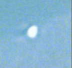

En Grèce, une famille de touristes français en vacances photographie un ovni.
L'ovni filmé à Kapyong

Un caméraman professionnel en repérage dans la province de Kapyong (Corée du Sud) aperçoit, puis filme un point
lumineux. Ce dernier se scinde en une dizaine de morceaux qui disparaissent au loin après plus de 5 mn.
A Mouvaux, Nord, 1 témoin observe
plusieurs points lumineux dans le ciel qui semblent grossir de taille en les observant à la jumelle. D'autres
points semblent se déplacer rapidement entre les précédents SEPRA: PAN classé C.
A Périgueux, Dordogne, plusieurs témoins indépendants
observent un ensemble de lumières blanches tournant dans le ciel et semblant parfois suivre les véhicules des
témoins. Le phénomène reste silencieux et est observé pendant 10 mn environ Bien que toutes les recherches dans ce sens soient restés vaines la description faite par les témoins concordent avec celles faites en général lors de l'observation de projecteurs laser publicitaires. Il est possible qu'à cette heure des essais aient pu être faits dans les environsSEPRA: PAN classé B.
A Dompierre-les-Ormes, Saône-et-Loire, 2 témoins
observent depuis chez eux 2 boules rouge-vert se déplaçant dans le ciel. 1 des boules se met de temps en temps à
tourner autour de l'autre. Le phénomène reste silencieux, le diamètre estimé de ces boules est de l'ordre de 4 ou 5
m. L'enquête a permis de trouver un autre témoin qui a témoigné tardivement SEPRA: PAN classé C.